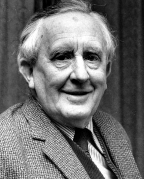

Джон Ро́нальд[К 1] Ру́эл «Дж. Р. Р.» То́лкин[
Джон Ро́нальд[К 1] Ру́эл «Дж. Р. Р.» То́лкин[К 2] (англ. John Ronald Reuel «J. R. R.» Tolkien, английское произношение: [dʒɒn ˈrɒnld ˈruːl ˈtɒlkiːn]; 3 января 1892, Блумфонтейн — 2 сентября 1973, Борнмут) — британский писатель, поэт, переводчик, лингвист и филолог. Ветеран Первой мировой войны. Один из самых известных писателей XX века, автор более двухсот различных публикаций (37 книг, 63 статьи, 121 перевод) и множества незавершённых работ.
Наиболее известен как автор классических произведений «высокого фэнтези»: «Хоббит, или Туда и обратно», «Властелин колец» и «Сильмариллион». Эти книги породили сотни переводов, подражаний, продолжений и адаптаций и стали заметным явлением культуры XX века[10]. Авторский миф Толкина (который отчасти может представлять собой реконструкцию мифологии донорманнской Англии[11], пусть в целом это взращивание не остатков «мифологии», а «всей „первобытной поросли“ преданий и языка, в диапазоне от серьёзного до курьёзного»[12]) является литературным феноменом XX века и самим автором с позиции жанра именовался «волшебной историей» и «мифом»